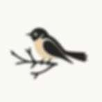
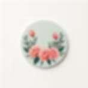
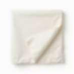

Script Passenger Label
HUF 14
Személyes babaváró és emléktárgyak. Kézzel készült fa kiegészítők, amik otthonossá teszik a babaszobát. Gondos odafigyeléssel készült ajándékok a legkisebbeknek.
Nézz körülKézműves fa tárgyak, amik harmóniát visznek a gyerekszobába
Névre szóló fa emlékeink
Kézzel festett faliképek
Szívvel készült meglepetés
Egyedi babaholmik neked
Magyar népi motívumok modern formában. Ez a sorozatunk a hagyományt és a békés otthon melegét hozza el. A letisztult fa és a klasszikus minták találkozása a mai, stílusos gyerekszobákban.
Katalógus-előnézet · Az online vásárlás még nem érhető el.
HUF 14

HUF 12

HUF 15

HUF 58
Hiszünk abban, hogy a babaszoba a nyugalom szigete. Minden tárgyat nagy gonddal készítünk el neked. A természetes anyagok és a finom, mesés részletek segítenek abban, hogy az otthonod csendes és biztonságos menedékké váljon a kicsi számára.